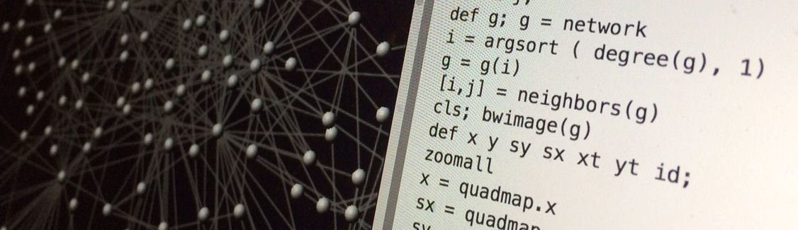
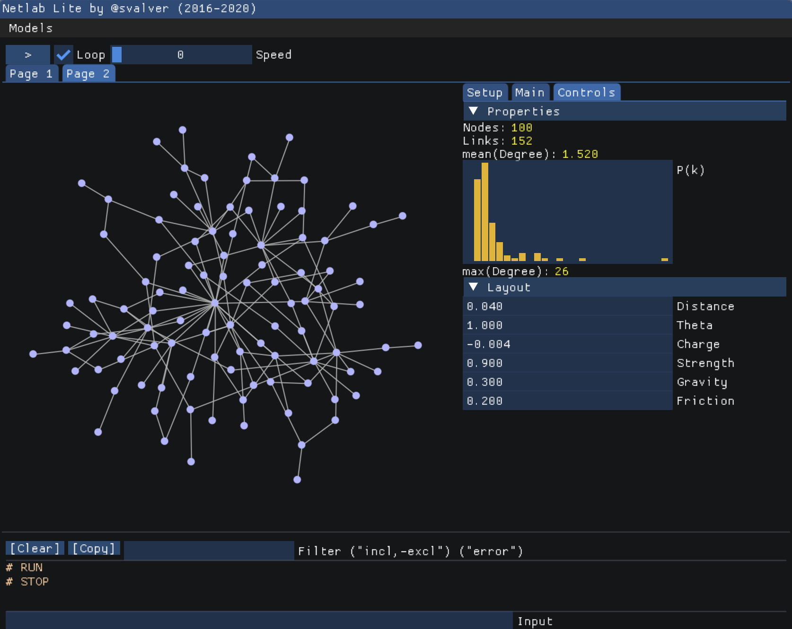
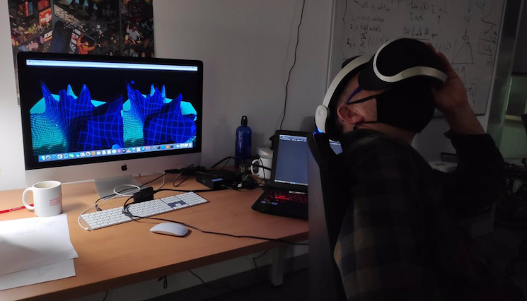

Netlab is a research-supported software platform developed for the analysis, modeling, and visualization of complex networks. It has supported research publications, and its visual renderings have appeared in The New York Times Magazine (March 12, 2006) and a special Nature issue on Ecological Complexity (Vol. 442, No. 7100, July 20, 2006).
The programming-language project illustrates its use in reconstructing large-scale evolutionary relationships.
Edge-Bundling of Programming Language Influences shows an example of real-time rendering in Netlab.

Access Netlab Lite, an online, compact version of the full Netlab platform. Netlab Lite enables students to program network models and conduct common analyses directly within a web browser (requires WebGL; Chrome or Firefox is recommended).
BiMat is an open-source MATLAB library designed for analyzing modularity and nestedness in bipartite ecological networks. Developed in collaboration with César Flores, Timothée Poisot, and Joshua Weitz, BiMat offers features such as modularity and nestedness calculations, diversity indices (Shannon and Simpson), null models for creating random bipartite networks, and additional network statistics.
The source code and documentation accompany the BiMat software paper.
Fractal Patenting brings together geolocated U.S. patent data, Python scripts and notebooks for analysing spatial clustering and inequality across scales. The repository includes spatial-model outputs and analytical tools for studying the inequality horizon, alongside the computational material for Fractal clusters and urban scaling shape spatial inequality in U.S. patenting (2025). The map above shows geographical clustering in biotechnology patenting.
Chimera combines evolutionary dynamics with a physically embodied simulation of cells in a fluid environment. Evolving adhesion between cells and their surroundings produces aggregation and spatial segregation; changes in nutrient flow then allow ecosystem engineering to emerge. These transitions show how physical constraints and ecological interactions can shape the organization of evolving populations.
Watch the Chimera simulation to see the emergence of spatial and ecological structure.

We developed real-time virtual reality interfaces for visualizing complex networks and fitness landscapes, testing them with PlayStation VR and HTC Vive Pro headsets. The image above shows the PlayStation VR experiments.
The Silwood Park food-web video provides a 3D stereo rendering for viewing with a smartphone VR headset.